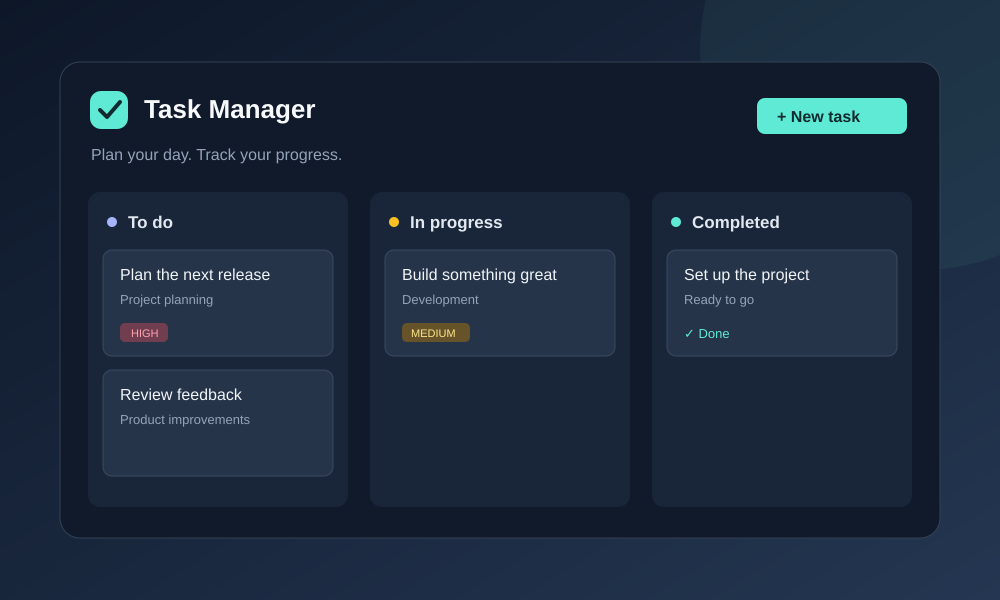

Backend
Java, Spring Boot, REST APIs, JWT authentication, role-based access, validation, Swagger documentation.
Java Full Stack Developer
I develop full stack applications from database design and REST APIs to responsive frontends, authentication flows, deployment, and documentation. My portfolio highlights production-minded projects with real user workflows, clean code, and maintainable architecture.
About
I am a Java full stack developer who enjoys building complete applications with a clear backend, usable frontend, and deployment-ready structure. My work combines Spring Boot, React, relational databases, authentication, API documentation, and responsive interface design.
Recruiters will find projects here that show ownership across the stack: secure login, role-based permissions, CRUD workflows, search and filtering, database persistence, hosted demos, and GitHub repositories that show how each application is put together.
Skills
My strongest fit is Java backend development with Spring Boot, connected to modern React frontends and SQL-backed application data.
Java, Spring Boot, REST APIs, JWT authentication, role-based access, validation, Swagger documentation.
PostgreSQL, MongoDB, relational modeling, repositories, persistence, task and content data workflows.
React, JavaScript, TypeScript fundamentals, Vite, Axios, responsive layouts, component-based UI.
Git, GitHub, Railway, Render, static deployment, environment configuration, production links.
Projects
These projects show backend APIs, frontend implementation, authentication, deployment, and practical product workflows.

Blog platform with Spring Boot REST API, React frontend, JWT authentication, role-based access for Admin, Author, and User, rich text editing, categories, tags, comments, and video embedding.

Full-stack online shop with a React and TypeScript frontend, a Spring Boot API, product browsing, user registration and sign-in, a shopping cart, checkout, and order history backed by a persistent H2 database.

Full-stack task management application combining React and TypeScript with a Spring Boot API. Features JWT authentication, task creation and editing, status and priority filters, search, and a single Docker deployment.

Fitness timer app focused on a simple, usable workout flow with interval timing, configurable work and rest periods, mobile-friendly layout, and a lightweight deployed experience.
Focus
Building REST endpoints, service layers, persistence, validation, authentication, and documentation.
Creating responsive user interfaces that connect cleanly to APIs and support real application workflows.
Taking features from data model and API contract to frontend integration, deployment, and reviewable code.
Contact
I am available for recruiter conversations, junior to mid-level Java full stack opportunities, and project-based collaboration.